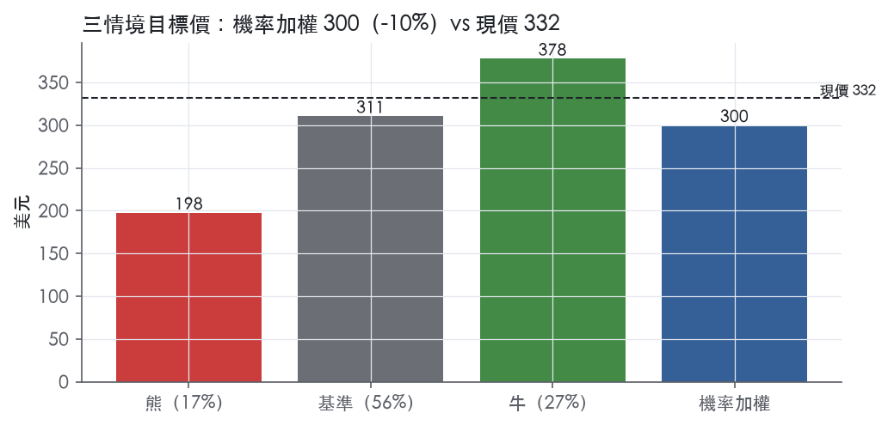
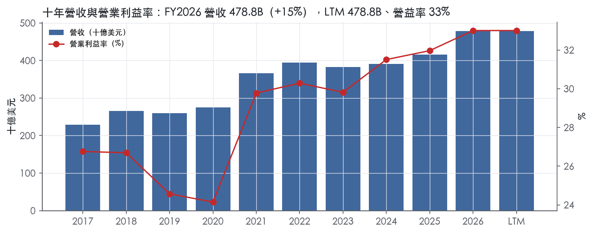
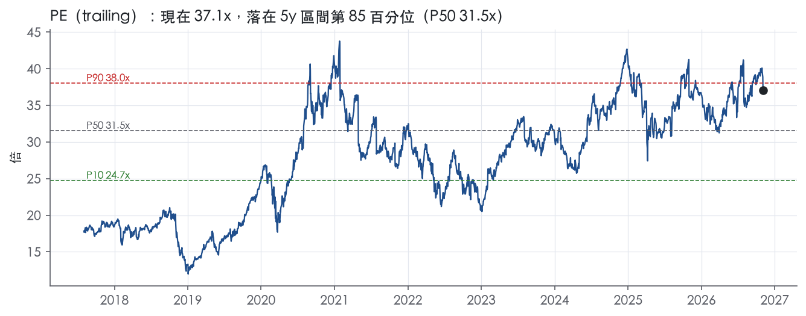
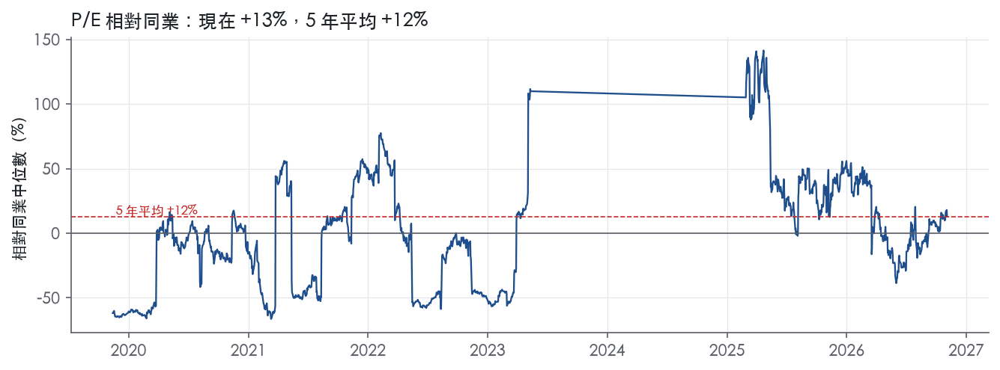
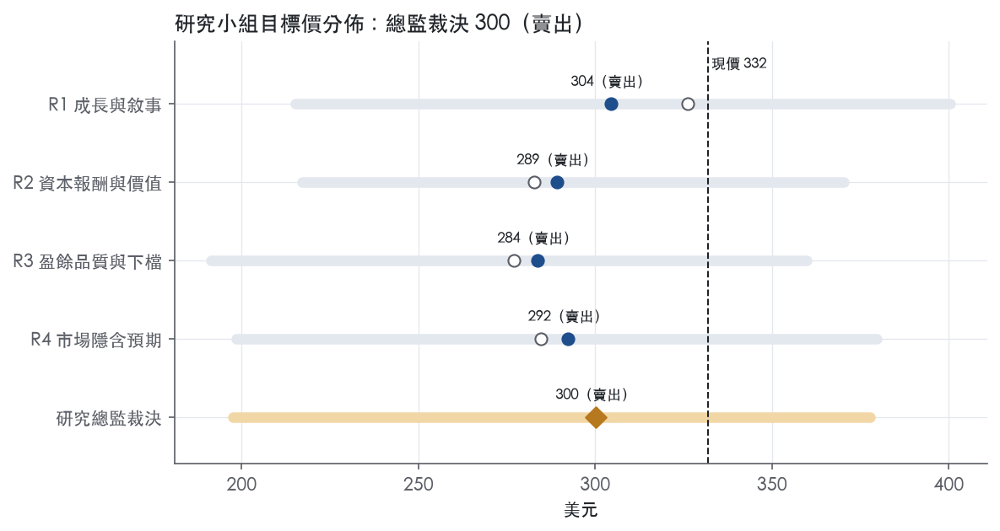
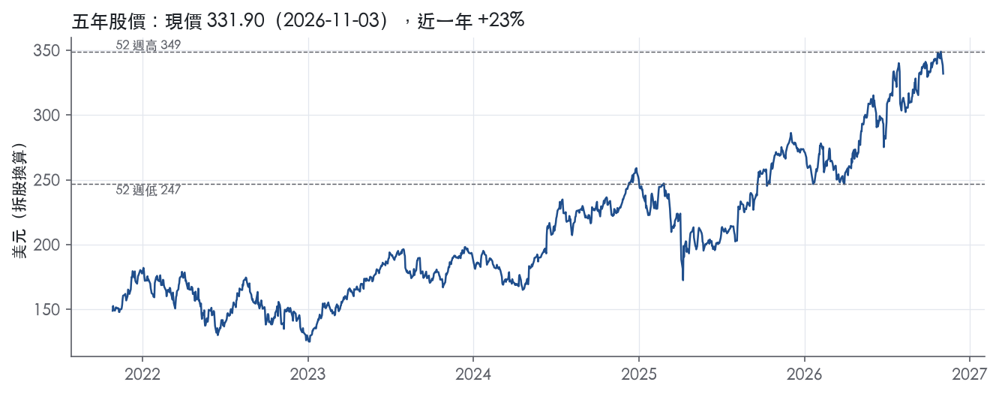

評等總表 › 資訊科技 › AAPL
Duo撐一年，倍數30x，維持看空｜評等 賣出｜目標價 300
| 報告日 | 評等 | 目標價 | 當時股價 | 超額報酬 |
|---|---|---|---|---|
| 2026-11-03 | 賣出 | 300 | 332 | -19.2% |
| 2026-10-09 | 賣出 | 307 | 337 | -18.7% |
| 快評 | 動作 | 結論 |
|---|---|---|
| 2026-11-02 | 維持 | 營業利益低於預測8.6%，維持賣出 |
| 評等 | 賣出 |
| 12 個月目標價 | 300 美元 |
| 現價 | 331.90 美元（2026-11-03） |
| 預期報酬 | 股價 -9.6%＋股息 0.3%＝總報酬 -9.3%；同業籃門檻 9.9%，超額 -19.2% |
| 估值方法 | P/E 30.0x，套在第 5–8 季的EPS（也就是一年後的未來四季） |
| 三情境 | 熊 198／基準 311／牛 378 |
| 研究流程 | 四位研究員兩輪辯論＋研究總監裁決 |
| 資料來源 | SEC EDGAR XBRL、Tiingo、FRED（全免費） |
Duo撐一年，倍數30x，維持看空（研究總監裁決，四位研究員兩輪辯論後）
評等 賣出｜12 個月目標價 300 美元（總監三情境機率加權 309 與研究員中位數 291 各半）｜現價 331.90（2026-11-03）
預期報酬：股價 -9.6%＋股息 0.3%＝總報酬 -9.3%。同業籃門檻 9.9%，超額 -19.2%。
估值方法：P/E 30.0x，套在第 5–8 季的EPS（也就是一年後的未來四季）。三情境：熊 198（17%）／基準 311（56%）／牛 378（27%）。
什麼會讓研究總監改變看法：FY2027Q1 在 143.76B 高基期上營收年增 ≥15% 且無退款毛利率 ≥48.5%，週期框架失效：y2 回 9–10%、倍數升至 33x、立場轉中性。
| 過去四季（實際，FY2026Q4） | 未來四季 | 第 5–8 季 | 第 9–12 季 | |
|---|---|---|---|---|
| 營收（B） | 478.8B | 531.5B | 563.4B | 597.2B |
| 營收成長 | 15.1% | 11.0% | 6.0% | 6.0% |
| 營業利益率 | 33.0% | 32.3% | 31.8% | 31.8% |
| EPS（美元） | 8.96 | 9.76 | 10.35 | 11.15 |
| EPS 成長 | 20.2% | 9.0% | 6.1% | 7.7% |
| 每股股息（美元） | 1.06 | 1.06 | 1.06 | 1.06 |
| P/E（現價） | 37.1x | 34.0x | 32.1x | 29.8x |
| 股息殖利率（現價） | 0.3% | 0.3% | 0.3% | 0.3% |
過去四季為申報數字；預測為研究總監的假設、程式計算。倍數與殖利率都用現價計算，用來看現價對應各期獲利的高低。
| 項目 | 上次（2026-10-12） | 這次（2026-11-04） | 變動 |
|---|---|---|---|
| 評等 | 賣出 | 賣出 | ＝ |
| 機率加權目標價（美元） | 307 | 300 | -2.3% |
| 超額報酬 | -18.7% | -19.2% | -0.5 pp |
| 目標倍數 | 30x | 30x | — |
| 未來四季營收成長 | 9.0% | 11.0% | +2.0 pp |
| 未來四季營益率 | 33.0% | 32.3% | -0.7 pp |
| 未來四季 EPS（美元） | 9.63 | 9.76 | +1.3% |
| 熊／基準／牛機率 | 18／62／20 | 17／56／27 | — |
程式計算；「未來四季」各自從當次報告的資料起點算。研究總監逐點說明見第八章「與上次報告比較」。
| 情境 | 機率（歷史） | 故事 | 未來四季營收成長 | 第 5–8 季營益率 | 倍數 | 目標價 | 股價漲跌 |
|---|---|---|---|---|---|---|---|
| 熊 | 17%（13%） | 風險表第 1 條關稅反轉（退款轉等幅逆風）疊加第 2 條記憶體成本超出基準、第 4 條 App Store 佣金，Duo 換機斷層，倍數回帶 P50 下方；觸發點 2027 年 2 月與 5 月財報，疊加本行下行路徑 | 5.0% | 29.0% | 23.0x | 198 | -40.5% |
| 基準 | 56%（58%） | Duo 撐住 FY2027 營收 11%，Q5–Q8 對高基期回落到 6%；退款消失、記憶體與攤銷壓營益率到 31.8%，倍數降到前瞻帶 P90 | 11.0% | 31.8% | 30.0x | 311 | -6.4% |
| 牛 | 27%（28%） | Duo 多年換機潮、Siri AI 推升 Services，營益率守 33%，市場維持現行前瞻倍數；對應本行上行路徑 | 14.0% | 33.0% | 33.0x | 378 | 13.8% |
目標價由程式依研究總監的驅動與倍數計算；機率由研究總監給定。括號內是歷史頻率：把這檔股票過去十年 12 個月報酬的波動形狀，置中在基準情境，結果落在各情境附近的比例。

四位研究員用不同方法各自估值，回應研究總監的質疑後交出第二輪，最後由總監逐點裁決。各研究員的主張見第七章，裁決理由見第八章，完整論證見《研究底稿》。
| 立場（一輪→二輪） | 加權目標價（一輪→二輪） | 評等（一輪→二輪） | 第二輪倍數 | 熊～牛目標價 | |
|---|---|---|---|---|---|
| R1 成長與敘事 | 看空→看空 | 326→304 | 減碼→賣出 | 30.0x | 215～400 |
| R2 資本報酬與價值 | 看空→看空 | 283→289 | 賣出→賣出 | 28.0x | 217～370 |
| R3 盈餘品質與下檔 | 看空→看空 | 277→284 | 賣出→賣出 | 28.0x | 191～360 |
| R4 市場隱含預期 | 看空→看空 | 285→292 | 賣出→賣出 | 28.0x | 199～380 |
| 研究總監裁決 | 看空 | 300 | 賣出 | 30.0x | 198～378 |
目標價由程式依各自的驅動與倍數計算；評等＝機率加權總報酬 − 同業籃門檻。
Apple 是一家設計、製造並銷售智慧型手機、個人電腦、平板、穿戴裝置與配件，並搭配一系列服務的消費性硬體公司。公司原文定義其業務為「designs, manufactures and markets smartphones, personal computers, tablets, wearables and accessories, and sells a variety of related services」¹。客戶主要落在消費者、中小企業、教育、企業與政府市場¹。公司幾乎自己設計整套解決方案，包含硬體、作業系統、大量軟體應用與相關服務，這是其與多數硬體同業最大的差異¹。FY2026 總營收 478.83B 美元，年增 15.1%（dv 衍生，年度表），是公司史上最大年度營收規模。
Apple 管理架構以地理區域為主，而非以產品線分部¹；但新聞稿同時揭露產品類別口徑，兩者並存。產品線包括 iPhone（基於 iOS）、Mac（基於 macOS，含 MacBook Air/Pro、iMac、Mac mini、Mac Studio）、iPad（基於 iPadOS）、以及 Wearables, Home and Accessories（Apple Watch、AirPods、Apple Vision Pro、Apple TV 4K、HomePod 等）¹。服務則涵蓋廣告、AppleCare、雲服務、數位內容（App Store、Apple Music、Apple TV、Apple Arcade 等）與支付服務（Apple Pay、Apple Card）¹。
就 FY2026 全年營收結構看，iPhone 254.10B 美元、Mac 37.93B 美元、iPad 27.93B 美元、Wearables/Home/Accessories 35.58B 美元、Services 123.30B 美元²。iPhone 仍是最大引擎，佔總營收約五成以上，且 FY2026 全年年增率明顯跑贏大盤（iPhone 從 209.59B 美元增至 254.10B 美元）²。Services 則持續創新高，FY2026 全年 123.30B 美元，較 FY2025 的 109.16B 美元成長²；其結構性意義在於毛利率遠高於硬體，是推升公司整體毛利率的主力。Mac、iPad、Wearables 三線規模相對穩定，成長動能弱於 iPhone 與 Services，屬於成熟產品線。公司並未在 10-K 中按產品分部揭露營業利潤率，10-K 未揭露各產品線的獲利能力。
Apple 的報告分部為 Americas、Europe、Greater China、Japan、Rest of Asia Pacific 五大地理區域¹。FY2026 全年營收分布為 Americas 198.08B 美元、Europe 127.60B 美元、Greater China 82.38B 美元、Japan 30.91B 美元、Rest of Asia Pacific 39.86B 美元²。Americas 仍是最大市場，佔比約四成；Greater China 全年年增（64.38B 美元→82.38B 美元）幅度顯著，顯示該區域在 FY2026 出現明顯回升。通路上，公司直接透過零售、線上商店與直銷團隊銷售，同時仰賴第三方電信業者與經銷商等間接通路，FY2026 間接通路占總淨銷售約 60%¹，顯示 Apple 對電信商與零售夥伴的議價與鋪貨能力仍是營收實現的關鍵環節。
FY2026Q1（截至 2025-12-27）營收 143.76B 美元，年增 15.7%，毛利率 48.2%、營益率 35.4%，為單季獲利能力高點（is/季表 FY2026Q1）。FY2026Q2 營收回落至 111.18B 美元，年增仍達 16.6%，毛利率 49.3%（季表 FY2026Q2）。FY2026Q3（6 月季）營收 109.4B 美元，年增 16%，毛利率 50.1%，含約 2 個百分點的關稅退款正面影響，稀釋 EPS 2.02 美元、年增 29%，其中含 0.11 美元關稅退款貢獻³；該季 iPhone、Mac、Services 營收均創六月季新高，且所有地理區域均達雙位數成長³。FY2026Q4（9 月季）營收 114.5B 美元，年增 12%，毛利率 47.9%，含約 1 個百分點關稅退款影響，稀釋 EPS 2.10 美元、年增 14%，含 0.05 美元關稅退款貢獻，iPhone 營收與 EPS 雙創九月季紀錄，Services 創歷史新高²。公司並宣布每股 0.27 美元現金股息，將於 2026-11-16 派發²。FY2026 全年營收 478.83B 美元、淨利 132.18B 美元、稀釋 EPS 8.98 美元，CFO 145.10B 美元；全年 FCF 136.06B 美元。整體看，FY2026 四季毛利率穩定維持在 47–50% 區間，且逐季受惠關稅退款正面挹注，但 Q4 增速已從 Q1/Q2 的 15–17% 回落至 12%，動能略有降溫。
公司將競爭力建立在「持續且及時推出創新產品、服務與技術」上，並強調自己幾乎設計整套解決方案，包含硬體、作業系統與相關服務¹。公司明確點名人工智慧是未來競爭重點，指出「has made significant investments in building artificial intelligence features and related infrastructure across its products and services」¹，並在財報中稱全新 Siri AI 是帶動假期銷售季的關鍵亮點之一²。CEO Ternus 將 iPhone Duo、iPhone 18 Pro/Pro Max 稱為「most ambitious lineup yet」，並提到首次將 Touch 引入 Mac²。公司也坦承自身在全球智慧型手機、個人電腦、平板與穿戴裝置市場僅佔少數份額（minority market share），且部分市場成長停滯甚至萎縮¹；供應面則面臨先進半導體、記憶體與儲存元件的產業性供需失衡與成本上升，且預期此趨勢在記憶體/儲存上將加劇¹。
就我們的判斷，Apple 的成長敘事已從「硬體創新週期」轉向「AI 功能＋Services 貨幣化」雙軌並進，iPhone 大週期（Duo/18 Pro）提供短期營收動能，Services 結構性擴張則撐住毛利率。關稅退款對近兩季毛利率與 EPS 的貢獻是一次性尾部效應，不應視為常態化毛利率水準。記憶體與先進半導體的供應緊張若持續惡化，可能是 FY2027 毛利率與資本支出的主要變數。

Apple 的護城河評為寬，趨勢穩定。核心來源是軟硬體一體化生態造成的轉換成本，輔以品牌聲譽與 App Store 雙邊平台的網路效應。ROIC 有資料的 9 年全部高於資本成本代理值 9.9%，十年平均 76.0%、最低 30.1%。我們有把握未來 10 年以上 ROIC 仍高於資本成本。趨勢不評「變寬」，有三個原因：近期利潤率高點含一次性因素，AI 運算與記憶體成本正在墊高，平台入口也面臨重新洗牌的風險。
最強的一條是轉換成本。公司自行設計幾乎整套解決方案，涵蓋硬體、作業系統、大量軟體應用與相關服務⁴。雲端服務讓客戶內容在多台 Apple 裝置與 Windows 電腦之間保持同步、隨時可用⁴。用戶的內容、訂閱、配件與跨裝置使用習慣都綁在 iOS、macOS、watchOS 體系內。換到競爭平台要付出的不只是硬體價差，還要重建整套數位資產與使用流程，這是高回報的主要支撐。
第二是無形資產，重心在品牌而非專利牆。公司持有專利、設計、著作權、商標與營業秘密等廣泛的智慧財產，目前在全球有數千件申請案進行中⁴。但公司自己也承認，主要依靠的是員工的創新、技術與行銷能力，而且沒有任何單一智慧財產能獨力保護其產品⁴。10-K 把 corporate reputation 列為主要競爭因素之一⁴。因此本項的證據是品牌溢價，不是技術排他性。
第三是網路效應。公司經營 App Store 等平台，讓客戶發現並下載應用程式與數位內容⁴。10-K 把「a strong third-party software and accessories ecosystem」列為主要競爭因素⁴。開發者跟著高價值用戶走，用戶跟著應用與配件生態走，這是雙邊網路效應。不過它屬於平台層效應，不是社交型網路，強度次於轉換成本。
成本優勢與效率規模不列入。10-K 明說許多競爭者以極低的成本結構競爭，而 Apple 在全球手機、個人電腦、平板與穿戴市場都只有少數份額⁴。
看得到，而且數字比定性證據更強。ROIC 十年平均 76.0%、最低 30.1%，9 年全部高於資本成本，平均超額 66.1%。毛利率十年平均 42.4%、標準差 3.9%；營業利益率平均 28.9%、標準差 3.0%；FCF 利潤率標準差 2.1%。公司形容自己所處的市場有「aggressive price competition, downward pressure on gross margins」⁴。在這樣的市場裡，毛利率卻從最低 37.8% 走到最新 48.8%，這是定價權存在的直接證據。
數字和主張之間有兩處衝突。第一，ROIC 標準差達 24.5%，稱不上穩定。我們判斷這主要是分母效應：大規模回購壓縮了投入資本與股東權益，ROE 最高達 175.5%就是佐證，所以 ROIC 的攀升有一部分來自資本結構，而非營運優勢擴大。即使取最低值 30.1%，仍遠高於資本成本，因此維持「寬」的評級。第二，10-K 描述的是競爭激烈、價格敏感、產品週期短的市場⁴。我們的解讀是，價格壓力落在硬體規格層，而 Apple 的回報來自生態系層，兩者並不矛盾。
最大威脅是 AI 改變平台入口。10-K 指出，競爭者會模仿公司把元件無縫整合的做法，或彼此合作提供整合方案⁴。公司也承認在 AI 的開發與部署上與多家公司競爭，並已大舉投資 AI 功能與相關基礎設施⁴。如果 AI 助理成為跨平台的主要互動層，用戶對作業系統的依附會下降，轉換成本這條主軸將被削弱。
第二是成本與資本強度。公司正面臨先進半導體、記憶體與儲存元件的供給受限與成本上升，並預期記憶體與儲存的情況會加劇⁴。能可靠滿足需求的第三方雲端供應商有限，資料中心投資又牽涉大額支出與長期承諾⁴。這會把一家輕資本公司推向較重資本的結構，同時壓低 ROIC 的分子並墊高分母。
第三是授權依賴。許多硬體、軟體與服務含有必須向第三方授權的技術，未來未必能以合理條件取得或續約⁴。
第四是基期失真。業務概況章指出 FY2026 後兩季毛利率含關稅退款挹注，因此最新毛利率 48.8%不宜當作常態水準。此外，平台抽成模式若遭監管壓縮，網路效應的變現能力會最先受傷。
目標倍數應相對硬體與消費電子同業給予溢價，理由是 ROIC 9 年全數高於資本成本、利潤率標準差低，而且我們有把握超額回報可延續 10 年以上。但溢價應以同業比較為錨，不宜假設自身歷史倍數再擴張：P/E 已位於五年分位 85.3%、EV/Sales 位於 94.8%（現在分位），護城河大致已反映在股價裡。趨勢評為穩定而非變寬，所以不支持倍數持續上修，基期利潤率應先扣除關稅退款的一次性貢獻再套倍數。
| 指標 | 最新 | 十年平均 | 標準差 | 最低 | 最高 |
|---|---|---|---|---|---|
| ROIC | 103.6% | 76.0% | 24.5% | 30.1% | 103.9% |
| 毛利率 | 48.8% | 42.4% | 3.9% | 37.8% | 48.8% |
| 營業利益率 | 33.0% | 28.9% | 3.0% | 24.1% | 33.0% |
| FCF 利潤率 | 28.4% | 25.6% | 2.1% | 22.6% | 28.4% |
| ROE | 142.3% | 127.2% | 49.3% | 49.4% | 175.5% |
程式計算。資本成本代理值（10 年債＋5%）：9.9%；ROIC 平均減資本成本：66.1%；ROIC 有資料的 9 年中，高於資本成本 9 年。
營業現金流／淨利 LTM 為 1.10x、近三年平均 1.12x、十年平均 1.21x，全部位於綠燈區，盈餘長期由現金而非應計堆出來【量化底稿】。自由現金流／淨利同樣全綠，LTM 1.03x、三年 1.02x、十年 1.07x，扣掉資本支出後依然覆蓋淨利【量化底稿】。應計比率連三期為負（LTM −3.3%、三年 −3.4%、十年 −4.3%），負值越大代表盈餘越不靠應計項目撐場，這是典型高品質盈餘的訊號【量化底稿】。拆開全年 145.10B 的 CFO 對比 132.18B 淨利，差距主要來自折舊攤銷 13,423M 與 SBC 13,789M 兩項非現金回加²。但單看 FY2026Q4，營業現金流 28.10B 已低於淨利 30.71B（抄：8-K 2026-11-02），這個季度性缺口主要是存貨拉貨造成的營運資金占用，detail 在紅旗段落說明。
這次新聞稿沒有提供非 GAAP 調整表，營收、毛利、EPS 全部是 GAAP 數字²。公司自己揭露的唯一「可比性」調整，是毛利率包含約 1 個百分點的關稅退款正面影響、EPS 包含 0.05 美元的關稅退款正面影響²。這屬於一次性項目，退稅不會每季重複發生，估值時應該拿掉。現金流量表裡回加的 SBC 13,789M 與折舊攤銷 13,423M 是正常的非現金費用回加，不是灰色地帶的盈餘操作，本計分表也沒有加回處理，直接看 SBC／營收口徑即可。SBC／營收 LTM 2.9%、三年 3.0%、十年 2.5%，全部綠燈，沒有稀釋成本被隱藏的問題【量化底稿】。
槓桿極低，淨負債／EBITDA 僅 0.14x，遠優於 1.50x 的綠燈門檻，十年平均利息保障倍數 28.6x，付息能力沒有疑慮【量化底稿】。淨負債從 FY2025 的 43.96B 降到 FY2026 的 23.39B，連續去槓桿而非加碼舉債【量化底稿】。股東權益從 73,733M 增至 112,093M，總負債 292,455M（抄：8-K 2026-11-02）。資本配置上，全年回購 86,390M、發放股利 15,721M（抄：8-K 2026-11-02），對應（股利＋回購）／淨利 LTM 77.3%、三年 96.5%、十年 113.2%，比例偏高但因為淨負債同步下降，可以確認是用自由現金流而非舉債在回饋股東【量化底稿、判】。
存貨成長比營收快 139 個百分點（FY2026，紅燈）：資產負債表存貨從 5,718M 跳到 14,541M（抄：8-K 2026-11-02），現金流量表對應為存貨變動用去現金 8,905M，相較去年同期是來源 1,400M（抄：8-K 2026-11-02），而全年營收僅成長 15.1%。10-K 風險因子揭露公司正面臨進階半導體、記憶體與儲存元件的供給緊張，因此提前拉貨備料，且預期這個趨勢對記憶體與儲存將進一步加劇⁵。同時新聞稿提到公司在本季推出 iPhone Duo、iPhone 18 Pro／Pro Max 及新一代 Mac／家用產品陣容，對新品週期提前建置庫存是正常現象²。判斷：這是供應鏈避險與新品備貨造成的暫時性營運資金占用，不是需求轉弱或盈餘灌水的訊號，屬於可解釋的假警報，但如果下一季存貨無法隨銷售去化，就要重新檢視。
稀釋股數年變動（黃燈）：LTM 為 0.0%，但近三年平均 −2.4%、十年平均 −3.9%，顯示長期靠回購持續減少股數的趨勢沒有改變，LTM 轉平只是單期回購與股權獎酬發行節奏相抵的結果，不是股權稀釋失控的訊號。對照全年回購金額仍高達 86,390M（抄：8-K 2026-11-02），回購步調並未放緩，黃燈屬於雜訊而非趨勢反轉。
估值基礎應該用 GAAP 淨利，但要扣掉本季約 0.05 美元 EPS 的關稅退款一次性正面影響，還原到經常性盈餘水準。存貨紅旗是新品週期與供應鏈備貨造成，不需要對盈餘打折，但應把下一季存貨去化速度列為盈餘品質的追蹤指標。槓桿極低（淨負債／EBITDA 0.14x）不構成倍數上限的限制，目前 EV/EBITDA 28.3x 已處在過去五年 91.6% 分位，估值偏貴反映的是成長與品牌溢價定價，不是盈餘品質問題。
| 項目 | LTM | 近三年 | 十年 | 燈號 | 規則 |
|---|---|---|---|---|---|
| 營業現金流／淨利 | 1.10x | 1.12x | 1.21x | 綠 | ≥1.00x 綠、<0.80x 紅 |
| 自由現金流／淨利 | 1.03x | 1.02x | 1.07x | 綠 | ≥0.90x 綠、<0.60x 紅 |
| 應計比率（(淨利−CFO)／平均總資產） | -3.3% | -3.4% | -4.3% | 綠 | ≤0.0% 綠、>5.0% 紅 |
| SBC／營收 | 2.9% | 3.0% | 2.5% | 綠 | ≤3.0% 綠、>8.0% 紅 |
| 淨負債／EBITDA | 0.14x | 0.25x | 0.45x | 綠 | ≤1.50x 綠、>3.00x 紅 |
| 利息保障倍數（營業利益／利息） | — | — | 28.6x | — | ≥8.00x 綠、<3.00x 紅 |
| 稀釋股數年變動 | 0.0% | -2.4% | -3.9% | 黃 | ≤0.0% 綠、>3.0% 紅 |
| （股利＋回購）／淨利 | 77.3% | 96.5% | 113.2% | 綠 | ≥50.0% 綠、<0.0% 紅 |
| 應收帳款成長 − 營收成長（FY2026） | -4.9pp | — | — | 綠 | ≤5pp 綠、>15pp 紅 |
| 存貨成長 − 營收成長（FY2026） | +139.2pp | — | — | 紅 | ≤5pp 綠、>15pp 紅 |
程式計算；燈號以 LTM（無則近三年平均）判定。
| 風險 | 觸發指標（看什麼數字、在哪裡看） | 對 EPS 的影響方向與粗略幅度 | 未來 12 個月發生機率（高／中／低） | 出處 |
|---|---|---|---|---|
| 關稅／貿易限制反轉或升級 | 季度 8-K 毛利率中「tariff refunds」揭露的百分點數字；新關稅公告日期 | 負向，中～大：FY2026Q3 退款貢獻 EPS 0.11 美元、Q4 貢獻 0.05 美元³²，反轉即為等幅度逆風 | 中 | 10-K 年報 FY2026 Item 1A（風險因素） |
| 先進半導體／記憶體與儲存供應緊張、成本上升 | 季度毛利率環比變化（47.9%～50.1%區間）；公司揭露的供應限制聲明 | 負向，中：公司明言「expect these trends to intensify for memory and storage components」⁵ | 高 | 10-K 年報 FY2026 Item 1A（風險因素） |
| 單一／有限來源供應商與亞洲代工集中（中國、印度、日韓、台灣、越南） | 任一主要代工廠停工公告、所在地出口管制新規生效日 | 負向，大：公司稱「significant majority of manufacturing performed... primarily in China mainland, India, Japan, South Korea, Taiwan and Vietnam」⁵ | 中 | 10-K 年報 FY2026 Item 1A（風險因素） |
| 反壟斷／監管訴訟與 App Store 商業模式變更 | 任何新的反壟斷裁決、App Store 佣金規則變更公告 | 負向，方向明確、幅度未定：公司稱已在美國調整 App Store 內開發者溝通規則⁵ | 中 | 10-K 年報 FY2026 Item 1A（風險因素） |
| AI 技術落地失敗或引發法律/資安責任 | 新 AI 功能上線後的用戶投訴、訴訟公告、監管調查公告 | 負向，方向不確定但潛在幅度大：公司列出 AI 代理「可能採取未授權行動」等多重風險⁵ | 中 | 10-K 年報 FY2026 Item 1A（風險因素） |
關稅與貿易限制是當下最可監測、也最直接動盈餘的風險。公司自 FY2025Q2 起就面臨對中國、印度、日本、南韓、台灣、越南及歐盟進口的新關稅⁵，但 FY2026Q3、Q4 的財報顯示公司實際上已從「關稅退款」拿到正面毛利率貢獻（約 1～2 個百分點）與 EPS 貢獻（0.05～0.11 美元）³²。這意味著目前的毛利率水準（47.9%～50.1%）部分依賴一次性退款，一旦退款結束或新一輪關稅上調，毛利率會同時失去順風、疊加成本上升，雙重擠壓 EPS。監測指標：每季 8-K 中關稅對毛利率、EPS 的揭露百分點，以及美國貿易代表署或白宮新關稅公告日期。
記憶體、儲存與先進半導體供應緊張是公司在 10-K 中罕見地用「currently experiencing」而非假設語氣描述的風險，且明確預告「expect these trends to intensify for memory and storage components」⁵。這代表成本上升不是遠期假設，而是正在發生中、且公司自己預期會惡化的既定趨勢。由於 Apple 的毛利率在 FY2026 已墊高到 48.8%（年度表），任何組件成本上升若無法完全轉嫁給消費者，將直接壓縮毛利率。監測指標：季度毛利率環比變化、公司法說會對組件成本的評論。
代工與供應鏈地理集中風險的觸發可能性相對分散（多個國家、多個代工廠），但單一事件衝擊幅度可能很大，因為「final assembly of substantially all of the Company's hardware products」集中在亞洲少數夥伴⁵。公司坦言對單一來源組件的依賴使其「diminished control」over production and distribution，且「from time to time had, and may in the future have, an adverse effect」⁵。監測指標：任一主要代工廠（如鴻海、和碩等）所在地的自然災害、罷工或出口管制新規生效公告。
反壟斷與監管訴訟風險的特殊性在於，公司在 10-K 中明確承認「number of claims...has generally increased over time and may continue to increase」⁵，且已經在美國調整 App Store 內開發者溝通規則以應對監管壓力⁵。業務概況章提到 Services 佔 FY2026 全年營收 123.30B 美元，是毛利率結構性支撐的主力，而 App Store 佣金模式正是 Services 毛利的核心來源之一，若進一步被迫調整佣金結構，對 Services 毛利率的衝擊將直接傳導至整體 EPS。監測指標：任何新增反壟斷裁決或 App Store 政策變更的官方公告。
AI 落地的法律與操作風險是公司在本次 10-K 中新增篇幅最大的部分之一，公司列出一長串 AI 代理可能「take actions autonomously」「exceeding permissions」「conceal actions」等風險描述⁵，顯示管理層對 Siri AI 等新功能的風險意識明顯提高。業務概況章也指出新 Siri AI 被定位為假期銷售季的關鍵亮點之一，意味著 AI 功能已直接綁定短期營收預期，一旦出現重大資安事件或監管介入，衝擊的不只是聲譽，也包括該季銷售動能。監測指標：AI 相關重大資安事件、監管調查或訴訟公告。
一、關稅退款的「退款後基期」風險：FY2026Q3、Q4 的毛利率與 EPS 成長率（年增 29%、14%）都內含一次性關稅退款貢獻³²，但 10-K 風險章並未單獨量化說明這部分貢獻在 FY2027 是否會消失。我們認為市場在建模 FY2027 毛利率時，應扣除這部分一次性利益，否則容易高估常態化獲利能力。
二、iPhone 單一產品線的集中度放大效應：業務概況章指出 iPhone FY2026 全年營收 254.10B 美元，佔總營收比重超過五成，且 FY2026Q4 的營收與 EPS 紀錄都由 iPhone 創新高帶動²。10-K 風險章雖然提到產品轉型風險，但未specifically點出 iPhone 單一產品線佔比過高可能使任一代新機銷售不如預期時，對整體營收與 EPS 的影響會被放大。我們認為應持續監測 iPhone 單季營收年增率是否跌破兩位數，作為營收動能降溫的早期訊號。
現價 331.90 對應 trailing（過去四季）P/E 37.1x、EV/EBITDA 28.3x、EV/EBITA —、EV/Sales 10.1x、FCF 殖利率 2.8%。主要估值倍數 P/E 現在 37.1x，落在5 年區間第 85 百分位（P10／P50／P90 = 24.7x／31.5x／38.0x）。

把程式的機械基準預測放到現價下，市場付的前瞻倍數是：P/E（未來四季） 32.9x、P/E（第 5–8 季） 29.6x。反推 DCF 顯示市價隱含未來五年營收年成長 16.1%（WACC 9.0%、終值成長 3.0%、FCF 利潤率 28.3%，SBC 不加回）。
| 倍數 | 現在 | 5 年 P10 | 5 年 P50 | 5 年 P90 | 現在分位 | 全期 P50 |
|---|---|---|---|---|---|---|
| P/E | 37.1x | 24.7x | 31.5x | 38.0x | 85.3% | 28.7x |
| EV/EBITDA | 28.6x | 19.3x | 23.8x | 28.3x | 91.6% | 22.9x |
| EV/EBITA | 28.7x | 20.8x | 25.4x | 29.3x | 83.5% | 24.9x |
| EV/EBIT | 31.1x | 21.1x | 26.2x | 30.8x | 91.3% | 25.3x |
| EV/Sales | 10.3x | 6.4x | 8.0x | 9.9x | 94.8% | 7.2x |
| P/S | 10.2x | 6.2x | 7.8x | 9.8x | 94.9% | 7.1x |
| P/FCF | 35.9x | 22.8x | 30.7x | 37.0x | 86.0% | 27.5x |
trailing 倍數（股價 ÷ 過去四季）；分位以每個交易日計算。
同業籃：DELL, SMCI, OMCL, ZEPP, OSS, SCKT（SIC 3571 同業 8 家中，CY2025 營收最接近的 6 家）。評等門檻 9.9%：同業「倍數不變下持有一年」的隱含報酬中位數（＝ FCF 殖利率 ×(1＋g)＋g，g 為 5 年營收年複合成長並夾在 −2%～8%），每家夾在 0～15%、P/E 低於 5 倍視為資料可疑而排除，中位數再限制在 10 年債到 10 年債＋5% 之間（同業原始中位數 12.0%）；排除：ZEPP（隱含報酬算不出來）、SCKT（隱含報酬算不出來）。
| 代號 | 市值 | 5 年營收 CAGR | 營益率 | ROIC | P/E | 5 年 P/E 中位數 | EV/EBITDA | P/FCF | 隱含報酬 |
|---|---|---|---|---|---|---|---|---|---|
| AAPL | 4,823.3B | 5.5% | 33.0% | 103.6% | 37.1x | 31.5x | 28.3x | 35.5x | 8.5% |
| DELL | 261.4B | 5.5% | 9.4% | 36.0% | 23.8x | — | 16.4x | 30.5x | 9.0% |
| SMCI | 20.6B | 61.5% | 7.1% | 36.3% | 9.6x | 21.0x | 6.1x | — | 19.2% |
| OMCL | 1.6B | 5.8% | 4.6% | 0.4% | 41.9x | — | 9.9x | 11.3x | 15.2% |
| ZEPP | — | -47.4% | — | -11.9% | — | — | — | — | — |
| OSS | 0.1B | -9.1% | -17.3% | -18.9% | 94.4x | — | — | — | -1.0% |
| SCKT | 0.0B | -0.8% | -26.1% | — | — | — | — | — | — |
| 同業中位數 | 2.4% | 4.6% | 0.4% | 32.8x | 21.0x | 9.9x | 20.9x | 9.9% |
全部 trailing，程式以各公司 SEC XBRL 與 Tiingo 行情計算；第一列為本檔。
P/E 相對同業中位數：現在 12.8%，過去 1 年平均 11.9%、3 年 —、5 年 12.5%；EV/EBITDA 相對同業中位數：現在 185.4%，過去 1 年平均 94.6%、3 年 71.3%、5 年 65.9%。

事後實現前瞻倍數帶（P/E，2018-11-12..2025-11-10）：P10／P50／P90 = 15.4x／24.2x／30.1x。它是每個交易日的股價除以之後四季實際實現的指標；一年後，今天的第 5–8 季正是那時的未來四季，所以這條帶是 12 個月目標價的同口徑倍數。因為用的是事後實際而非當時預期，過去成長超乎預期的公司這條帶會偏低。
程式的機械基準（成長率從過去四季年增率三年收斂到 6%、利潤率持平）用 事後實現前瞻 P/E P50 估值得到 271（-18.3%），市場現行前瞻倍數（現價 ÷ 基準 未來四季指標）一年後持平，套在基準 第 5–8 季指標得到 369。這兩個數字只是參考點，不是本報告的目標價；研究員對這個定價的回應在第七章。
下表是每位研究員第一輪（各自獨立）與第二輪（回應研究總監的質疑後）的結果。目標價全由程式依各自的假設計算。
| 立場（一輪→二輪） | 加權目標價（一輪→二輪） | 評等（一輪→二輪） | 第二輪倍數 | 熊～牛目標價 | |
|---|---|---|---|---|---|
| R1 成長與敘事 | 看空→看空 | 326→304 | 減碼→賣出 | 30.0x | 215～400 |
| R2 資本報酬與價值 | 看空→看空 | 283→289 | 賣出→賣出 | 28.0x | 217～370 |
| R3 盈餘品質與下檔 | 看空→看空 | 277→284 | 賣出→賣出 | 28.0x | 191～360 |
| R4 市場隱含預期 | 看空→看空 | 285→292 | 賣出→賣出 | 28.0x | 199～380 |
| 研究總監裁決 | 看空 | 300 | 賣出 | 30.0x | 198～378 |
目標價由程式依各自的驅動與倍數計算；評等＝機率加權總報酬 − 同業籃門檻。
分歧度：第一輪 加權目標價 277～326（區間＝現價的 15%）· 倍數 28～34x · 立場 看空×4（方向一致）；第二輪 加權目標價 284～304（區間＝現價的 6%）· 倍數 28～30x · 立場 看空×4（方向一致）。

| 研究員 | 第二輪主張 | 堅持的理由 |
|---|---|---|
| R1 成長與敘事 | 看空，目標倍數 30x，錨在歷史前瞻 P/E 上緣 30.1x。 | Q4 減速是全面的，iPhone、Mac、Services 年增都低於 Q3。 |
| R2 資本報酬與價值 | 看空，目標倍數 28x，營益率三年持平在 32.5%。 | 資本支出回升，資本報酬的改善已到頭，不給更高倍數。 |
| R3 盈餘品質與下檔 | 看空，目標倍數 28x，營益率降到 31.8%。 | iPad 與穿戴年減，首季基期 143.76B，明年營收只成長 8%。 |
| R4 市場隱含預期 | 看空，目標倍數 28x，明年營收成長 11%。 | 市場把一次換機週期當成多年高成長，錯在第二年之後。 |
每位研究員的逐條回應與完整論證見《研究底稿》（AAPL_研究底稿_2026-11-04.docx）。
| 分歧點 | R1 成長 | R2 價值 | R3 品質 | R4 預期 | 什麼資料會分出勝負 |
|---|---|---|---|---|---|
| NTM 營收成長 rev_growth_y1 | 10%：Q4 各線年增皆低於 Q3，減速廣泛 | 10%：12 月季約 12%、其後三季約 9% | 8%：iPad、穿戴年減，143.76B 高基期 | 11%：iPhone 57,583M 對 49,025M、Mac 10,792M 對 8,726M 仍強，減速只在 iPad 與穿戴 | 2027-02-05 前 FY2027Q1 財報：營收年增、產品別、存貨 14,541M 是否去化 |
| Q5–Q8 營收成長 rev_growth_y2 | 5%：大週期第二年 | 5%：FY2021 之後 7.8%、−2.8% | 5% | 6%：Services 底盤 | 2027-05-08 前 FY2027Q2 在 16.6% 高基期上的年增；Duo 第二年出貨與 ASP |
| Q5–Q8 營益率 op_margin_y2 | 31.5%：記憶體成本、成長降到 5% 失去槓桿 | 32.5%：Services +0.5pp 與記憶體／AI −0.5pp 相抵 | 31.8%：高成本存貨 FY2027Q1 入帳、無形資產 11,093M→20,278M 攤銷、研發停在高水位 | 31.5%：研發去槓桿 | FY2027Q1 無退款毛利率對 48.2%；10-K 無形資產與其他非流動負債附註；研發季增 |
| 目標倍數 multiple | 30x：前瞻帶 P90，帶偏低故不取 P50 | 28x：P75 略下，資本密度反轉、ROIC 分母效應倒轉 | 28x：P50–P75 上緣，成長降檔、Q4 扣退款利潤率年減 | 28x：校正後帶上段，但 Q5–Q8 降檔不給持平 | 2027-11-05 一年後 trailing P/E 落在 5 年 P50 31.5x 上方或下方；FY2027Q2 成長是否降檔 |
| 熊情境倍數與機率 multiple（bear） | 26x、熊 23% 高於牛 22% | 24x、熊 28% 高於牛 23% | 23x、18% | 23x、20% | 風險表第 1 條：新關稅公告日期；第 2 條：法說會對記憶體成本的量化 |
NTM 營收成長：選 R4，11%。 8-K 2026-11-02 產品別：iPhone 57,583M 對 49,025M、Mac 10,792M 對 8,726M、Services 31,573M 對 28,750M、大中華 17,539M 對 14,493M，四項年增都高於公司整體的 12%；減速落在 iPad 6,229M 對 6,952M 與穿戴 8,300M 對 9,013M，兩線全年 27,929M 與 35,577M 對總營收 478,834M 只是小部分。Q4 只含 Duo 上市後幾週，CEO 說新陣容是要帶進假期季的；期末存貨 14,541M 對上年 5,718M，財務體質章判定為新品備貨，是對 12 月季出貨的押注，不是需求轉弱。R1 的減速表證明的是年增率的二階在下滑（Q4 低於 Q3），一階仍在雙位數，證據不足以把 y1 壓到 10% 以下；而研究部預測紀錄裡四位研究員的營收誤差中位數全是負的（−0.3%～−0.7%），R3 偏低最多，他的 8% 等於假設 iPhone 旺季加新品的 12 月季年增明顯低於 Q4 的 11.7%，與產品別矛盾。11% 低於機械基準 12% 的那 1 個百分點，留給本行前提的實質所得壓縮（GDP 1.8、WTI 88）與 143.76B 的高基期。
Q5–Q8 營收成長：選 R4，6%。 四人都在 5–6%，真正的對手是機械基準 9% 與市場隱含的十位數成長。R2 引 FY2021 之後 7.8%、−2.8%（年度表）的降檔史，方向我接受，所以不回到 9%；但 Services 123,301M 對 109,158M 已占總營收約四分之一（判斷）且雙位數成長，光這一塊就給整體成長一個底，Duo 是新形態產品，第二年良率成熟、價位擴充通常仍在爬坡（判斷），加上研究部營收偏低的紀錄，6% 比 5% 更不容易再犯同一個錯。第三年維持基準 6%。
營益率：選 R3，y1 32.3%、y2／y3 31.8%。 三個理由。第一，期間快評：FY2026Q4 營業利益低於我們上次預測 8.6%，Q4 營益率 31.1%含約 1 個百分點退款仍低於上年同季 31.6%，是上次 33% 路徑偏高的直接證據。第二，R3 看得到財務體質章與 10-K：無形資產 11,093M→20,278M 與其他非流動負債 41,549M→54,332M 同步跳增（8-K 2026-11-02 資產負債表），攤銷會進 FY2027 以後的費用；記憶體與儲存成本在 10-K 是「currently experiencing… expect these trends to intensify」；高成本存貨集中在 FY2027Q1 入銷貨成本。第三，R3 是四人中營業利益絕對誤差最小的（8.2%），而我自己的誤差中位數偏高（+0.9%），應往低修。R2 的 32.5% 三年持平是「Services +0.5pp、記憶體與 AI −0.5pp」的對稱假設，幅度沒有來源，也沒把無形資產攤銷算進去。R1、R4 的 31.5% 更低，但兩人的營業利益誤差中位數系統性偏高（+1.4%、+2.1%），而且他們的研發去槓桿機制被 Q3 11,729M、Q4 11,730M 季對季持平（8-K 2026-07-30、2026-11-02）削弱——階梯上升發生在 FY2026 內，FY2027 的年增壓力減輕，所以不取更低。
目標倍數：選 R1，30x eps@q5_q8。 錨是事後實現前瞻 P/E 帶 P90 30.1x。這條帶在成長期系統性偏低（劇本備註；FY2021、FY2026 實現高於預期），而市場對基準 NTM 付 32.9x、1 年 trailing P50 36.1x，代表過去一整年市場都付在這條帶的 P90 之上；P90 是週期過頂後的降評位置，不是天花板。R4 自己承認「用同一個校正，32.9x 落在校正後帶的上段」，那麼校正後的 P75 就落在原帶 P90 附近，他的 28x 是校正後的中段，與他自己的校正不一致。R2 的「ROIC 分母效應倒轉」：權益從 73,733M 增到 112,093M 是因為（股利＋回購）／淨利 LTM 只有 77.3%（財務體質章），這是配置選擇，不改變 P/E 所套的盈餘能力，淨負債也已降到 23.39B。R3 的「成長降檔、Q4 扣退款利潤率年減」已全部進我的 EPS，再壓倍數就是 R2 自己說的算兩次。不取市場持平 32.9x 的理由全是個股的：成長從 15.1% 降到 11% 再到 6%，Q5–Q8 要對上 Duo 首年的基期，營益率從 33.0% 走向 31.8%，護城河章明寫趨勢穩定不變寬、不支持倍數上修。同業籃（SMCI 9.6x 到 OSS 94.4x）不當錨；P/E 相對同業溢價 12.8% 與 1 年、5 年平均相當，表示我們假設的降評來自 Apple 自己的週期，不是相對同業的重估。利率：四人第二輪都沒有用利率壓倍數，R2 已刪除 FCF 殖利率對 10 年期的比較；敏感度表 t 值 −1.3 不可用。
熊情境倍數與機率：取 R4 的熊，機率自歷史表。 R4 的熊（5%／2%／3%，營益率 30／29／29，23x）對應風險表第 1 條（關稅反轉，退款轉為等幅逆風，機率中）疊加第 2 條超出基準的惡化（記憶體，機率高）。R2 的熊 28% 高於牛 23%，程式對照他自己的設定是牛 26%／熊 24%，他把記憶體與退款消失放進基準驅動後又拿來抬熊；R1 的熊 23% 高於牛 22% 同樣倒置。這正是本部門 22 份報告全部熊高於牛的偏誤，不接受。熊倍數 23x 比帶 P50 24.2x 略低，因為衰退期這條帶的偏誤方向相反（劇本備註）。
漂移處理。 程式沒有旗標任何人。R1 加權目標價向中位數靠攏 50%，來源是我在 G2 要求改用主尺並轉發前瞻帶——他第一輪 34x 套 trailing 口徑，換成前瞻口徑本來就落在 30x 附近，不是靠攏；R3 靠攏 88% 全部來自 Q1、Q4 兩條附證據的修正；R2、R4 是離開中位數。R2 的 4.98、R4 的產品別金額都查得到來源（總經前提、8-K 表格），不處理。drift_rejections 為空。
總經偏離。 四人都沒有提出 macro_deviations，我也不新增。本行前提對這家公司的用法：美元 121.3 在第 90 百分位但基準路徑不再走強，海外營收（Europe 127,604M、Greater China 82,378M、Japan 30,908M、Rest of AP 39,861M）的換算只是不消失的逆風，不是新增逆風；實質所得壓縮放在 y1 低於基準的 1 個百分點裡；10 年期 4.98 不進倍數。
| 驅動 | 機械基準 | 裁決 | 取自 | 理由 |
|---|---|---|---|---|
| rev_growth_y1 | 12.0% | 11.0% | R4 | Q4 產品別與存貨備貨撐 12 月季；高基期與實質所得壓縮扣 1 個百分點 |
| rev_growth_y2 | 9.0% | 6.0% | R4 | 大週期第二年降檔；Services 雙位數底盤 |
| op_margin_y1 | 33.0% | 32.3% | R3 | 退款消失、高成本存貨 FY2027Q1 入帳、記憶體成本；研發季對季已持平 |
| op_margin_y2／y3 | 33.0% | 31.8% | R3 | 無形資產攤銷、記憶體加劇、成長降到 6% 失去槓桿；Services 組合只部分抵銷 |
| da_pct_rev | 2.8% | 3.0% | R3 | 無形資產 20,278M 攤銷；只動 EBITDA／FCF 交叉驗證 |
| capex_pct_rev | 1.9% | 2.6% | R3 | 1.9% 為十年最低；10-K 資料中心大額支出與長期承諾 |
| share_change_pct | −1.9% | −1.6% | R3 | 回饋低於淨利（77.3%）、37.1x 回購換到的股數變少；與 Q4 稀釋股數年減幅度一致（判斷） |
rev_growth_y3、sbc、稅率沿用基準。目標倍數 30x，套在 eps@q5_q8，錨為事後實現前瞻帶 P90 30.1x（同口徑，不換算）；相對市場持平 32.9x 的折價全來自個股降檔，利率貢獻為零。對照 trailing 口徑：一年後若市場付 30x 於其後四季 EPS，trailing P/E 會落在 5 年 P50 31.5x附近，低於現在的 37.1x 與 1 年 P50 36.1x（方向判斷，不另算）。同業不作錨，只用來確認溢價穩定。EV/EBITDA、P/FCF、反推 DCF 由程式交叉驗證；反推 DCF 隱含 5 年成長 16.1%（WACC 9.0%）對上我們的 11%→6%→6%，就是差距所在。
| 情境 | 機率 | 取自 | 驅動 | 倍數 | 故事 |
|---|---|---|---|---|---|
| 牛 | 27% | R4 | 成長 14%／10%／7%，營益率 33% 持平 | 33x | Duo 多年換機潮、Siri AI 推升 Services、市場維持現行前瞻倍數；對應本行上行路徑（美元 119、GDP 2.8） |
| 基準 | 56% | 總監 | 上表 | 30x | Duo 撐住 FY2027，Q5–Q8 對高基期回落；退款消失、記憶體與攤銷壓利潤率，倍數降到帶 P90 |
| 熊 | 17% | R4 | 成長 5%／2%／3%，營益率 30／29／29 | 23x | 風險表第 1 條關稅反轉、第 2 條記憶體超出基準、第 4 條 App Store 佣金任一觸發，Duo 換機斷層；觸發點 2027 年 2 月與 5 月財報，疊加本行下行路徑（美元 124、GDP 0.3） |
機率從歷史基準率出發。牛情境的倍數 33x 只比我的 30x 高三個轉，成長差 3–4 個百分點，所以牛相對基準的距離比 R4 自己結果表的 +32% 近，牛的半程距離落在置中分布「≥+10%」（29%）與「≥+20%」（18%）之間偏前者，取 27%；熊倍數低七個轉、營益率再掉近 3 個百分點，熊相對基準的距離比 R4 的 −31% 遠，半程落在「≤−10%」（31%）與「≤−20%」（14%）之間偏後者，取 17%。牛高於熊與歷史順序一致，沒有偏離 10 個百分點以上；本行前提的一年內衰退機率 25% 低於歷史 31%，也沒有理由把熊抬到歷史之上。精確對照以程式結果表為準。
差距同時在盈餘與倍數，但盈餘為主。市場對機械基準 Q5–Q8 EPS 11.21 付 29.6x，那條基準假設 Q5–Q8 成長 9%、營益率 33%；我們的 6% 與 31.8% 讓 Q5–Q8 EPS 低於基準，差距集中在 rev_growth_y2 與 op_margin_y2 兩個驅動；倍數上我們的 30x 低於市場持平 32.9x，理由是週期過頂而非利率。立場看空與程式評等一致：基準情境的絕對下檔有限（程式結果表為準），賣出來自 9.9% 的門檻、股息率只有 0.3%，以及情境不對稱——牛情境只是市場維持現在的倍數，熊情境卻要掉到帶 P50 以下。
現價 331.90 → 點估目標價 311 → 機率加權目標價 309 → 目標價 300，差距拆成五段：成長順延 +37 美元（市場現行倍數 32.9x 一年後持平、獲利照機械基準）；倍數差 -33 美元（總監倍數 30.0x vs 市場持平倍數 32.9x，同一機械基準預測）；盈餘差 -26 美元（總監預測的第 5–8 季EPS 0.0B vs 機械基準 0.0B，同一倍數）；情境不對稱 -1 美元（機率加權減點估）；研究小組平均 -9 美元（總監機率加權 309 與研究員第二輪中位數 291 各半）。各段相加等於目標價減現價。本階段未接賣方共識，差距以市場隱含預期為對照。
| 驅動 | 機械基準 | 研究總監 | 差異 |
|---|---|---|---|
| 未來四季營收成長 | 12.0% | 11.0% | -1.0 pp |
| 第 5–8 季營收成長 | 9.0% | 6.0% | -3.0 pp |
| 第 9–12 季營收成長 | 6.0% | 6.0% | ＝ |
| 未來四季營益率 | 33.0% | 32.3% | -0.7 pp |
| 第 5–8 季營益率 | 33.0% | 31.8% | -1.2 pp |
| 第 9–12 季營益率 | 33.0% | 31.8% | -1.2 pp |
| D&A／營收 | 2.8% | 3.0% | +0.2 pp |
| 資本支出／營收 | 1.9% | 2.6% | +0.7 pp |
| SBC／營收 | 2.9% | 2.9% | ＝ |
| 稅率 | 17.0% | 17.0% | ＝ |
| 股數年變動 | -1.9% | -1.6% | +0.3 pp |
研究總監只寫偏移，未寫的沿用基準。
| 期 | 營收 | 成長 | 營益率 | 營業利益 | EBITDA | EBITA | 淨利 | EPS | FCF | 期末淨負債 |
|---|---|---|---|---|---|---|---|---|---|---|
| 未來四季 | 531.5B | 11.0% | 32.3% | 171.7B | 187.6B | 171.7B | 142.5B | 9.76 | 159.9B | -34.4B |
| 第 5–8 季 | 563.4B | 6.0% | 31.8% | 179.2B | 196.1B | 179.2B | 148.7B | 10.35 | 167.2B | -99.5B |
| 第 9–12 季 | 597.2B | 6.0% | 31.8% | 189.9B | 207.8B | 189.9B | 157.6B | 11.15 | 177.2B | -174.7B |
程式依上表的驅動計算；季度用最近四季季節性分攤；不含營運資金變動。
估值方法：P/E 30.0x，套在第 5–8 季的EPS（也就是一年後的未來四季）。研究總監目標倍數的錨：事後實現前瞻 P/E 帶 P90 30.1x：帶在成長期偏低、市場過去一年付在 P90 之上（1 年 trailing P50 36.1x、對基準 NTM 32.9x），P90 是週期過頂後的降評位置；低於市場持平 32.9x 因成長 15.1%→11%→6% 與營益率回落；同業籃失真不用；利率貢獻 0；與上次報告相同。
計算：EPS（第 5–8 季） 10.35 × 30.0x → 點估目標價 311（-6.4%）；隱含 P/E（未來四季）31.8x、P/E（第 5–8 季）30.0x、EV/EBITDA（第 5–8 季）22.1x、FCF 殖利率（第 5–8 季）3.8%。
總監三情境機率加權目標價 309，研究員第二輪中位數 291，兩者各半＝目標價 300；預期報酬 股價 -9.6%＋股息 0.3%＝總報酬 -9.3%；減評等門檻 9.9%（同業籃隱含報酬中位數（DELL, SMCI, OMCL, ZEPP, OSS, SCKT））＝超額報酬 -19.2% → 評等 賣出（超額 >+15% 買進、+5～+15% 加碼、±5% 中立、−5～−15% 減碼、<−15% 賣出）。同一份資料重開研究小組，超額約有正負四個百分點的雜訊（一個標準差，二十檔實測）；以此估計，評等落在其他級距的機率約一成。
| 情境 | 機率 | 未來四季成長 | 第 5–8 季成長 | 第 5–8 季營益率 | EPS（第 5–8 季） | 倍數 | 目標價 |
|---|---|---|---|---|---|---|---|
| 熊 | 17% | 5.0% | 2.0% | 29.0% | 8.59 | 23.0x | 198 |
| 基準 | 56% | 11.0% | 6.0% | 31.8% | 10.35 | 30.0x | 311 |
| 牛 | 27% | 14.0% | 10.0% | 33.0% | 11.45 | 33.0x | 378 |
| 主張 | 驗證日 | 看哪個數字 | 門檻 |
|---|---|---|---|
| FY2027Q1 營收年增不低於 10%（Duo 撐住假期季） | 2027-02-05 | FY2027Q1 營收年增率 | >= 10% |
| FY2027Q1 毛利率低於 48.5%（無退款；記憶體、存貨成本、Duo 初期良率） | 2027-02-05 | FY2027Q1 毛利率 | < 48.5% |
| FY2027Q2 在 16.6% 高基期上營收年增降檔 | 2027-05-08 | FY2027Q2 營收年增率 | < 12% |
| FY2027 全年營業利益率低於 FY2026 的 33.0% | 2027-11-06 | FY2027 營業利益率 | <= 32.5% |
| 一年後 trailing P/E 降評兌現 | 2027-11-05 | band.pe 現在值 | <= 34x |
到期由程式結算（第 5 階段帳本）。
內文上標數字對應下列公司申報文件；未標上標的分析與判斷，是研究小組的觀點。報告中的每個數字都經程式逐一核對資料包或原文。
| 期 | 營收 | 成長 | 毛利率 | 營益率 | EBITDA | 淨利 | EPS | CFO | FCF | ROIC | 淨負債 | 稀釋股數 |
|---|---|---|---|---|---|---|---|---|---|---|---|---|
| FY2017 | 229.2B | — | 38.5% | 26.8% | 71.5B | 48.4B | 2.30 | 64.2B | 51.8B | — | 95.4B | 21.0B |
| FY2018 | 265.6B | 15.9% | 38.3% | 26.7% | 81.8B | 59.5B | 2.98 | 77.4B | 64.1B | 30.1% | 48.2B | 20.0B |
| FY2019 | 260.2B | -2.0% | 37.8% | 24.6% | 76.5B | 55.3B | 2.97 | 69.4B | 58.9B | 42.4% | 7.5B | 18.6B |
| FY2020 | 274.5B | 5.5% | 38.2% | 24.1% | 77.3B | 57.4B | 3.28 | 80.7B | 73.4B | 61.4% | 21.5B | 17.5B |
| FY2021 | 365.8B | 33.3% | 41.8% | 29.8% | 120.2B | 94.7B | 5.61 | 104.0B | 93.0B | 89.1% | 62.1B | 16.9B |
| FY2022 | 394.3B | 7.8% | 43.3% | 30.3% | 130.5B | 99.8B | 6.11 | 122.2B | 111.4B | 80.8% | 71.8B | 16.3B |
| FY2023 | 383.3B | -2.8% | 44.1% | 29.8% | 125.8B | 97.0B | 6.13 | 110.5B | 99.6B | 83.3% | 49.5B | 15.8B |
| FY2024 | 391.0B | 2.0% | 46.2% | 31.5% | 134.7B | 93.7B | 6.08 | 118.3B | 108.8B | 89.0% | 41.5B | 15.4B |
| FY2025 | 416.2B | 6.4% | 46.9% | 32.0% | 144.7B | 112.0B | 7.46 | 111.5B | 98.8B | 103.9% | 44.0B | 15.0B |
| FY2026 | 478.8B | 15.1% | 48.8% | 33.0% | 171.5B | 132.2B | 8.98 | 145.1B | 136.1B | 103.6% | 23.4B | 14.7B |
SEC XBRL；每股數據已依拆股換算到現在股數基準。EBITDA 空白 = 該年無形攤銷在 companyfacts 中缺 tag。
| 期 | 期末 | 推導 | 營收 | 毛利率 | 營益率 | EBITDA | 淨利 | EPS | CFO | FCF | 現金 | 總債務 |
|---|---|---|---|---|---|---|---|---|---|---|---|---|
| FY2024Q1 | 2023-12-30 | 119.6B | 45.9% | 33.8% | 43.2B | 33.9B | 2.18 | 39.9B | 37.5B | 40.8B | 108.0B | |
| FY2024Q2 | 2024-03-30 | 90.8B | 46.6% | 30.7% | 30.7B | 23.6B | 1.53 | 22.7B | 20.7B | 32.7B | 104.6B | |
| FY2024Q3 | 2024-06-29 | 85.8B | 46.3% | 29.6% | 28.2B | 21.4B | 1.40 | 28.9B | 26.7B | 25.6B | 101.3B | |
| FY2024Q4 | 2024-09-28 | Q4 | 94.9B | 46.2% | 31.2% | 32.5B | 14.7B | 0.96 | 26.8B | 23.9B | 29.9B | 106.6B |
| FY2025Q1 | 2024-12-28 | 124.3B | 46.9% | 34.5% | 45.9B | 36.3B | 2.40 | 29.9B | 27.0B | 30.3B | 96.8B | |
| FY2025Q2 | 2025-03-29 | 95.4B | 47.1% | 31.0% | 32.2B | 24.8B | 1.65 | 24.0B | 20.9B | 28.2B | 98.2B | |
| FY2025Q3 | 2025-06-28 | 94.0B | 46.5% | 30.0% | 31.0B | 23.4B | 1.57 | 27.9B | 24.4B | 36.3B | 101.7B | |
| FY2025Q4 | 2025-09-27 | Q4 | 102.5B | 47.2% | 31.6% | 35.6B | 27.5B | 1.83 | 29.7B | 26.5B | 35.9B | 98.7B |
| FY2026Q1 | 2025-12-27 | 143.8B | 48.2% | 35.4% | 54.1B | 42.1B | 2.84 | 53.9B | 51.6B | 45.3B | 90.5B | |
| FY2026Q2 | 2026-03-28 | 111.2B | 49.3% | 32.3% | 39.3B | 29.6B | 2.01 | 28.7B | 26.7B | 45.6B | 84.7B | |
| FY2026Q3 | 2026-06-27 | 109.4B | 50.1% | 32.6% | 39.0B | 29.8B | 2.02 | 34.4B | 31.9B | 39.5B | 84.3B | |
| FY2026Q4 | 2026-09-26 | Q4 | 114.5B | 47.9% | 31.1% | 39.1B | 30.7B | 2.09 | 28.1B | 25.9B | 36.3B | 80.1B |
流量項目由 10-Q 的年初至今數拆成單季；Q4 = 年度 − 九個月。

本報告由 equity-desk 多代理系統產出，建置中版本，僅供內部研究與方法驗證，不構成投資建議。所有數字以 datapack.json 為準。